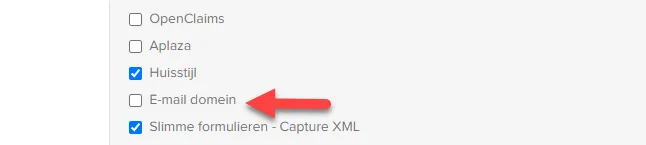
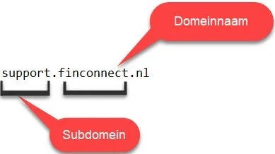
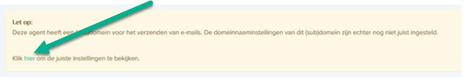
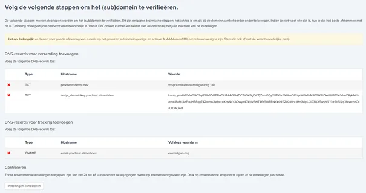
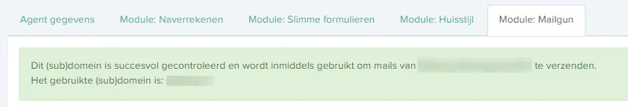
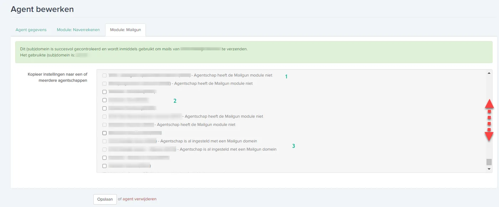

Eigen e-maildomein instellen voor verzending vanuit FinConnect
Stappen om een eigen (sub)domein te koppelen via de module E-mail (Mailgun) zodat e-mails minder snel als spam worden gezien.
Belangrijk
De module om nieuwe domeinen aan te maken of te koppelen is tijdelijk niet correct werkzaam en wordt aangepast.
Heeft u een nieuw e-maildomein waarvoor DNS-records aangemaakt moeten worden, of een wijziging in een bestaand e-maildomein, mail dan naar support-crm@blinqx.tech.
Vermeld in uw e-mail:
het gewenste e-mailadres
de (sub)domeinnaam
eventueel de agent die in FinConnect aanwezig is
Het effectueren van DNS-instellingen kan tot 48 uur duren en kan niet door ons beïnvloed worden.
Waarom een eigen e-maildomein koppelen
FinConnect maakt voor het verzenden van e-mails gebruik van Mailgun. De e-mails die verzonden worden, worden namens uw bedrijf gestuurd.
Soms kan dit problemen opleveren:
e-mails kunnen als spam worden gezien
sommige partijen kunnen de ontvangst van de e-mails blokkeren
Als het toepassen van het SPF record niet voldoende helpt, kan het nuttig zijn de module E-mail aan te vragen en te installeren.
Wanneer de module E-mail is geïnstalleerd:
er wordt niet namens uw bedrijf gemaild
er wordt echt vanuit uw domeinnaam gemaild
Module E-mail laten aanzetten op kantoorniveau
FinConnect zal de module op uw verzoek op kantoorniveau aanzetten.
Opmerking
Vervolgens kunt u zelf eventueel de stappen uitvoeren die hieronder staan.
E-maildomein activeren bij een agent (stappenplan)
Volg de onderstaande stappen om een e-maildomein te activeren.
Stap 1: Module E-mail domein aanzetten bij de agent
Ga naar de betreffende agent en klik op de knop ‘bewerk’.
Zet vervolgens bij Modules de module ‘E-mail domein’ aan.
Klik op opslaan.

Stap 2: Domein en regio instellen in tab ‘Module: Mailgun’
Ga bij het desbetreffende agentschap opnieuw naar de knop ‘bewerk’.
Open de extra tab genaamd ‘Module: Mailgun’.
Vul het domein in dat gebruikt moet gaan worden voor verzending.
Kies de regio van verzending (doorgaans Europa).
Vul beide velden in en klik op opslaan.

Opmerking
Het domein kan een domein of subdomein zijn.
Voorbeeld van een subdomein: ‘automatisering.agentschap.nl’.
Het domein wordt op de achtergrond aangemaakt.
Stap 3: DNS-records toevoegen en koppeling controleren
Klik op het linkje in de melding.
Controleer dat op het scherm van de agent een melding staat dat records ingesteld moeten worden.
Klik op het linkje in de melding zodat de pagina met records wordt geopend.
Laat alle drie de records toevoegen door een systeembeheerder of domeinbeheerder (hostingpartij van uw e-mailprogramma).
Kopieer bij voorkeur de 2e link achter TXT en plak deze in de mail naar uw contractpartner, zodat deze correct wordt overgenomen.
Wacht tot de wijzigingen wereldwijd zijn doorgevoerd (dit kan een aantal dagen duren).
Klik op de knop ‘controleren’ om te zien of de aanpassing is doorgevoerd.
Controleer dat de koppeling actief is en dat er via het nieuwe domein gemaild wordt.




Belangrijk
Alle drie de records moeten worden toegevoegd door een systeembeheerder of domeinbeheerder (hostingpartij van uw e-mailprogramma).
Vanaf februari 2024 is het voor bepaalde hostingpartijen ook nodig om DMARC te laten registreren. Geef daarom ook onderstaande gegevens aan uw systeembeheerder of IT partner door:
DMARC: _dmarc.’uw domeinnaam ‘ v=DMARC1; p=quarantine;
Voorbeeld:
DMARC: _dmarc.finconnect.nl v=DMARC1; p=quarantine;
Het kan een aantal dagen duren voordat DNS-wijzigingen wereldwijd zijn doorgevoerd.
Het effectueren van deze instellingen kan tot 48 uur duren en kan niet door ons beïnvloed worden.
SPF-record: maximaal 10 DNS-lookups (te veel includes)
Een SPF-record mag volgens de standaard maximaal 10 DNS-lookups bevatten. Elke include (en de onderliggende includes daarvan) telt mee. Gebruikt uw domein meerdere mailleveranciers in het SPF-record, dan kunt u tegen deze limiet aanlopen. Bij overschrijding faalt de SPF-validatie, met als gevolg dat e-mails worden geweigerd of in de spammap terechtkomen.
Het standaard Mailgun-record include:_spf.mailgun.org bevat meerdere onderliggende includes en zorgt daardoor voor circa 5 DNS-lookups.
Oplossing: vervang in het SPF-record include:_spf.mailgun.org door include:_spf.eu.mailgun.org.
De EU-variant telt als slechts één DNS-lookup in plaats van meerdere, waardoor het totaal aantal lookups direct daalt.
FinConnect verstuurt via de Europese Mailgun-infrastructuur. De EU-variant is daarom sowieso de juiste keuze voor correcte e-mailaflevering.
Let op: pas dit alleen toe als uw domein geen andere (niet-Europese) Mailgun-omgevingen gebruikt naast FinConnect. De aanpassing wordt doorgaans uitgevoerd door uw systeembeheerder of domeinbeheerder.
Meerdere agenten koppelen aan dezelfde domeinnaam
Als er meerdere agenten zijn die dezelfde domeinnaam gebruiken voor de mails van FinConnect, richt u bij één agent de domeinnaam in zoals hierboven beschreven.
Belangrijk
Het activeren bij andere agenten kan pas als de verificatie rond is en de koppeling is geactiveerd.
Opmerking
Noteer bij welke agent u welke domeinnaam heeft ingericht.
Inventariseer bij welke agenten (Id’s) in FinConnect u de E-mail module wilt koppelen aan dezelfde domeinnaam.
Agenten koppelen nadat verificatie en koppeling actief zijn (stappen)
Nadat de verificatie rond is en de koppeling actief is van een domeinnaam, kunt u de volgende stappen doorlopen.
Zet bij de agent(en) met dezelfde domeinnaam de module E-mail domein aan.
Ga naar de agent waar het domeinnaam al op is ingeregeld en geactiveerd.
Klik op Bewerk.
Open tab ‘Module: Mailgun’.
Controleer de lijst met agenten die bij het kantoor horen.
Vink de agenten aan waar u het ingestelde domeinnaam aan wilt koppelen.
Sla op via de button onderaan de pagina.
Wanneer u opslaat:
wordt per agent in de lijst getoond:
E-mail module bij agent staat niet aan - koppelen niet mogelijk
E-mail module staat aan, maar is nog niet gekoppeld aan een domeinnaam
E-mail module is al ingeregeld
wordt de E-mail module direct geactiveerd voor de gekoppelde agenten
Veelgestelde vragen
Waarom kan het nodig zijn om een eigen e-maildomein te koppelen?
Op de vraag "Waarom kan het nodig zijn om een eigen e-maildomein te koppelen?" is het antwoord dat e-mails die namens uw bedrijf worden verstuurd soms als spam worden gezien of zelfs geblokkeerd, en dat koppelen zorgt dat er echt vanuit uw domeinnaam wordt gemaild.
Wat moet ik doen als het SPF record niet voldoende helpt?
Op de vraag "Wat moet ik doen als het SPF record niet voldoende helpt?" is het antwoord dat het nuttig kan zijn om de module E-mail aan te vragen en te installeren, zodat verzending via uw eigen domeinnaam plaatsvindt.
Wat moet ik doen als mijn SPF-record te veel DNS-lookups bevat?
Op de vraag "Wat moet ik doen als mijn SPF-record te veel DNS-lookups bevat?" is het antwoord dat u include:_spf.mailgun.org kunt vervangen door include:_spf.eu.mailgun.org, mits er geen andere (niet-Europese) Mailgun-omgevingen worden gebruikt. Zie de sectie "SPF-record: maximaal 10 DNS-lookups" in dit artikel.
Wanneer kan ik meerdere agenten aan dezelfde domeinnaam koppelen?
Op de vraag "Wanneer kan ik meerdere agenten aan dezelfde domeinnaam koppelen?" is het antwoord dat dit pas kan nadat de verificatie rond is en de koppeling voor die domeinnaam actief is.
Waarom moet ik soms ook DMARC laten registreren?
Op de vraag "Waarom moet ik soms ook DMARC laten registreren?" is het antwoord dat dit vanaf februari 2024 voor bepaalde hostingpartijen nodig is en dat u daarom de DMARC-gegevens moet doorgeven aan uw systeembeheerder of IT partner.
Hoe lang kan het duren voordat DNS-wijzigingen actief zijn?
Op de vraag "Hoe lang kan het duren voordat DNS-wijzigingen actief zijn?" is het antwoord dat het een aantal dagen kan duren voordat wijzigingen wereldwijd zijn doorgevoerd en dat het effectueren tot 48 uur kan duren en niet door FinConnect beïnvloed kan worden.
Bron: helpcenter FinConnect